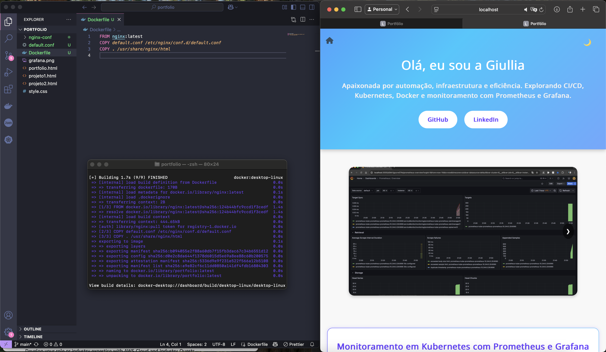
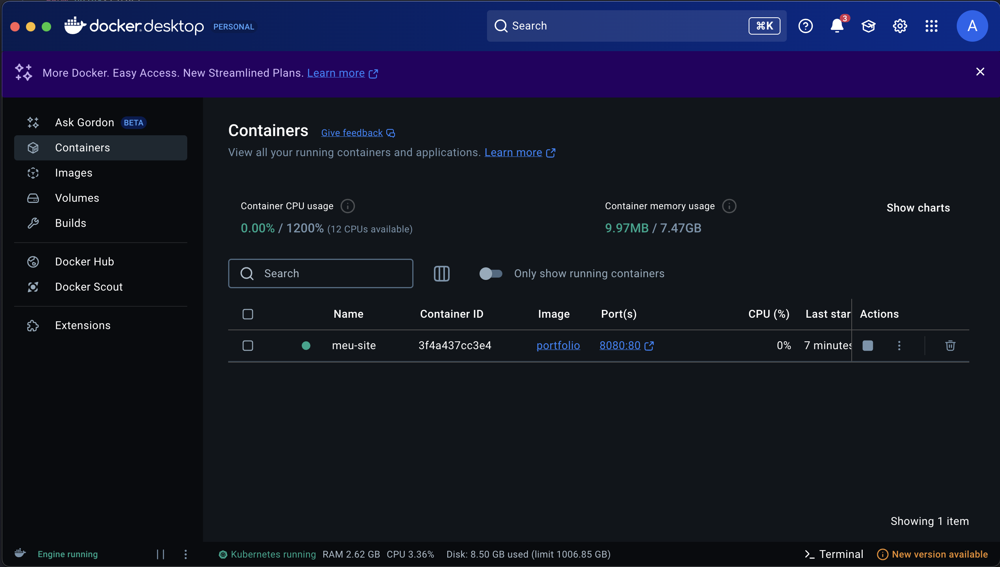

Portfolio com Docker + Nginx


Projeto com foco em introdução prática ao Docker, no qual empacotei meu portfólio web (HTML e CSS) em um container Docker utilizando Nginx como servidor web. A aplicação é executada em um ambiente isolado, podendo ser distribuída ou implantada em qualquer máquina com Docker instalado.
Demonstrar conhecimento em containers, imagens customizadas e execução de aplicações estáticas com Docker.
como funciona
Tecnologias UtilizadasCriação do Dockerfile
Usando nginx:latest como imagem base.
Copiando os arquivos do portfólio para /usr/share/nginx/html
FROM nginx:latest
COPY . /usr/share/nginx/htmlBuild da imagem Docker
docker build -t portfolio .Execução do container:
docker run -d -p 8080:80 --name meu-portfolio portfolioResultado
O portfólio é acessado via
http://localhost:8080sendo servido por um servidor Nginx dentro de um container Docker.
Aprendizados
Criação e execução de containers Docker
Uso do Nginx para servir aplicações estáticas
Mapeamento de portas e gerenciamento de containers via terminal
Boas práticas para estruturar e versionar projetos com Docker